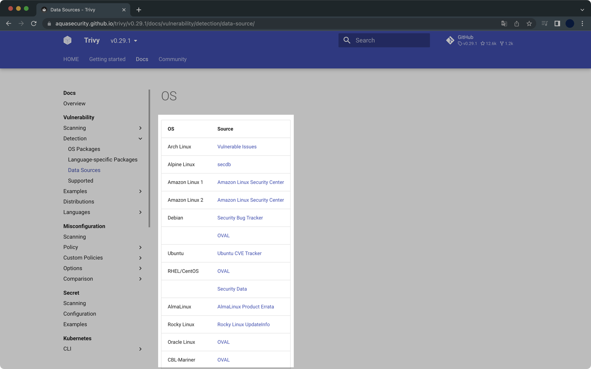
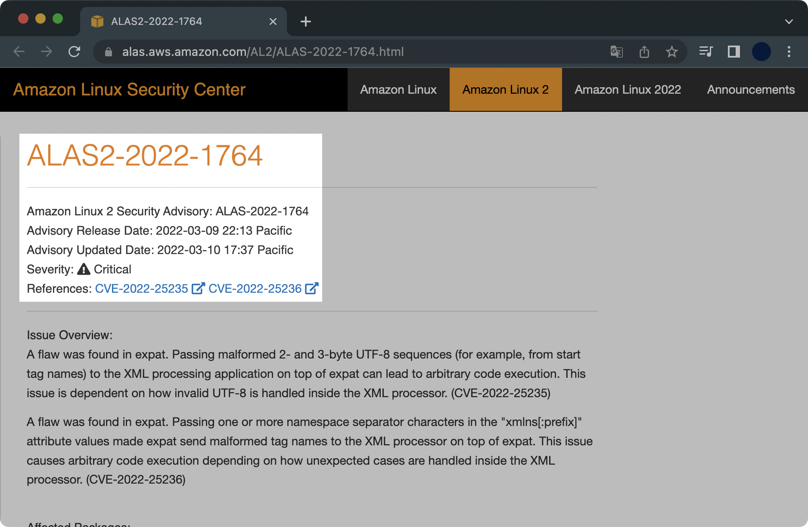
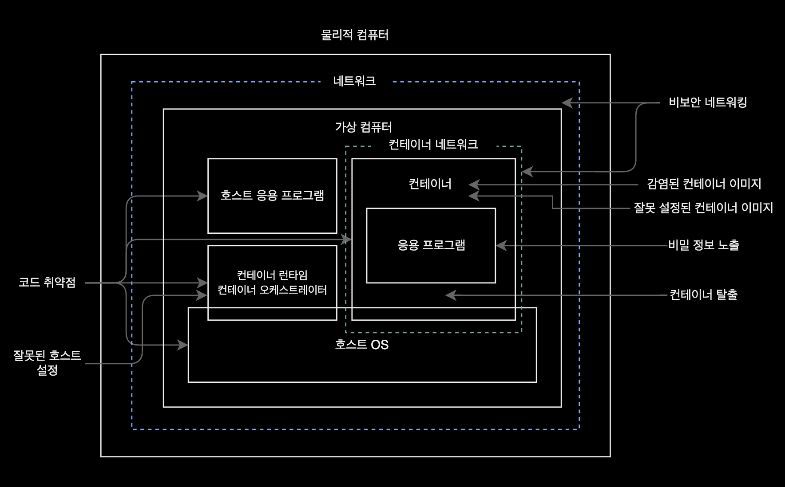
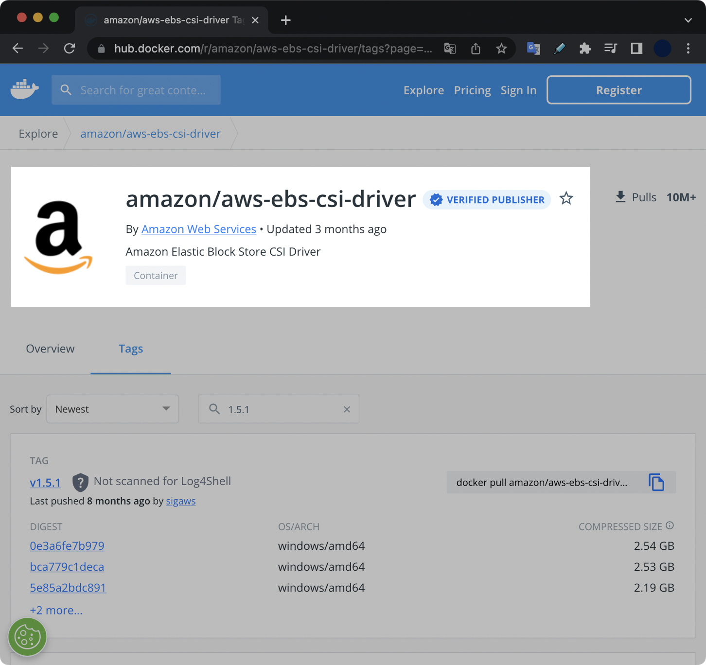

trivy로 컨테이너 취약점 스캔
개요
trivy는 사용 편의성이 뛰어나고 성능이 좋은 오픈소스 취약점 스캐너입니다.
비슷한 소프트웨어로는 clair, snyk 등이 있습니다.
Amazon Linux 2의 ALSA 취약점 데이터 소스도 제공합니다.
trivy에서 제공하는 모든 OS 관련 데이터 소스는 공식문서에서 확인할 수 있습니다.

trivy가 분석한 취약점은 ECR의 취약점 분석 결과와 동일하다고 보면 됩니다.
차이점은 Amazon ECR의 취약점 스캐닝은 ALAS라는 자체 취약점 코드로 별도 관리합니다. 사실 ALAS 취약점은 여러개(1개 이상)의 CVECommon Vulnerabilities and Exposures 취약점으로 구성됩니다.
trivy는 CVE를 분석해서 보여줍니다.

배경지식
컨테이너 공격 벡터
컨테이너 보안을 강화하기 위해서는 먼저 컨테이너의 수명 주기Lifecycle의 단계에서 가능한 공격 벡터를 이해하는 것이 가장 선행되어야 합니다.
컨테이너 기반 환경에 어떤 경로를 통해 공격자가 진입할 수 있을지를 정리한 컨테이너 공격 벡터 그림입니다.

위 컨테이너 공격 벡터는 리즈 라이스가 쓴 컨테이너 보안Container Security에서 가져왔습니다.
위 그림에 언급된 컨테이너 수명 주기 전체의 공격 벡터는 다음과 같습니다.
- 응용 프로그램 코드의 취약점
- 컨테이너 이미지 구축 시 설정 오류
- 이미지 구축용 컴퓨터 공격
- 공급망 공격
- 컨테이너 실행 시 설정 오류
- 호스트의 취약점
- 비밀 정보 노출
- 비보안 네트워킹
- 컨테이너 탈출 취약점
이 외에도 ‘소스코드 저장소 해킹’, ‘클라우드 네이티브 환경의 비보안 네트워킹’, ‘취약한 오케스트레이터 설정’ 등이 있습니다.
클러스터 관리자는 trivy 같은 컨테이너 보안 도구와 최소 권한 원칙, 직무 분리SoD 등의 보안 원칙들을 적용해서 쿠버네티스 클러스터와 컨테이너를 보호해야 합니다.
환경
- OS : macOS Monterey 12.4 (M1 Pro)
- Shell : zsh + oh-my-zsh
- 패키지 관리자 : Homebrew 3.5.2
- trivy 0.29.1
설치
macOS용 패키지 관리자인 brew를 사용해서 쉽게 설치 가능합니다.
$ brew install aquasecurity/trivy/trivy
설치 후 trivy의 버전을 확인합니다.
$ trivy version
Version: 0.29.1
Vulnerability DB:
Version: 2
UpdatedAt: 2022-06-16 06:06:28.171512256 +0000 UTC
NextUpdate: 2022-06-16 12:06:28.171511856 +0000 UTC
DownloadedAt: 2022-06-16 07:07:50.248157 +0000 UTC
사용법
컨테이너 취약점 스캔
trivy로 컨테이너 이미지 취약점 분석이 가능합니다.
다음과 같은 컨테이너 저장소 범위에서 사용할 수 있습니다.
- Docker hub와 같은 Public container registry
- Amazon ECR과 같은 Private, Public container registry
- 로컬에 저장된 컨테이너 이미지 등
명령어 예시 1
alpine:latest 이미지를 Docker hub에서 받아와서 취약점을 분석합니다.
$ trivy image alpine:latest
...
alpine:latest (alpine 3.16.0)
Total: 0 (UNKNOWN: 0, LOW: 0, MEDIUM: 0, HIGH: 0, CRITICAL: 0)
명령어 예시 2
amazon/aws-ebs-csi-driver:v1.5.1 이미지를 Docker hub에서 받아와서 HIGH, CRITICAL 레벨의 취약점만 출력합니다.
$ trivy image amazon/aws-ebs-csi-driver:v1.5.1 \
--severity "HIGH,CRITICAL"
취약점 스캐닝 결과는 다음과 같이 나옵니다.
...
amazon/aws-ebs-csi-driver:v1.5.1 (amazon 2 (Karoo))
Total: 8 (HIGH: 7, CRITICAL: 1)
┌────────────────┬────────────────┬──────────┬────────────────────────┬───────────────────────┬────────────────────────────────────────────────────────────┐
│ Library │ Vulnerability │ Severity │ Installed Version │ Fixed Version │ Title │
├────────────────┼────────────────┼──────────┼────────────────────────┼───────────────────────┼────────────────────────────────────────────────────────────┤
│ cyrus-sasl-lib │ CVE-2022-24407 │ HIGH │ 2.1.26-23.amzn2 │ 2.1.26-24.amzn2 │ cyrus-sasl: failure to properly escape SQL input allows an │
│ │ │ │ │ │ attacker to execute... │
│ │ │ │ │ │ https://avd.aquasec.com/nvd/cve-2022-24407 │
├────────────────┼────────────────┼──────────┼────────────────────────┼───────────────────────┼────────────────────────────────────────────────────────────┤
│ expat │ CVE-2022-25235 │ CRITICAL │ 2.1.0-12.amzn2 │ 2.1.0-12.amzn2.0.3 │ expat: Malformed 2- and 3-byte UTF-8 sequences can lead to │
│ │ │ │ │ │ arbitrary code... │
│ │ │ │ │ │ https://avd.aquasec.com/nvd/cve-2022-25235 │
│ ├────────────────┼──────────┤ │ ├────────────────────────────────────────────────────────────┤
│ │ CVE-2022-25236 │ HIGH │ │ │ expat: Namespace-separator characters in "xmlns[:prefix]" │
│ │ │ │ │ │ attribute values can lead to arbitrary code... │
│ │ │ │ │ │ https://avd.aquasec.com/nvd/cve-2022-25236 │
├────────────────┼────────────────┼──────────┼────────────────────────┼───────────────────────┼────────────────────────────────────────────────────────────┤
│ expat │ CVE-2022-25315 │ HIGH │ 2.1.0-12.amzn2 │ 2.1.0-12.amzn2.0.2 │ expat: Integer overflow in storeRawNames() │
│ │ │ │ │ │ https://avd.aquasec.com/nvd/cve-2022-25315 │
├────────────────┼────────────────┤ ├────────────────────────┼───────────────────────┼────────────────────────────────────────────────────────────┤
│ gzip │ CVE-2022-1271 │ │ 1.5-10.amzn2 │ 1.5-10.amzn2.0.1 │ gzip: arbitrary-file-write vulnerability │
│ │ │ │ │ │ https://avd.aquasec.com/nvd/cve-2022-1271 │
├────────────────┼────────────────┼──────────┼────────────────────────┼───────────────────────┼────────────────────────────────────────────────────────────┤
│ openssl-libs │ CVE-2022-0778 │ HIGH │ 1:1.0.2k-19.amzn2.0.10 │ 1:1.0.2k-24.amzn2.0.2 │ openssl: Infinite loop in BN_mod_sqrt() reachable when │
│ │ │ │ │ │ parsing certificates │
│ │ │ │ │ │ https://avd.aquasec.com/nvd/cve-2022-0778 │
├────────────────┼────────────────┼──────────┼────────────────────────┼───────────────────────┼────────────────────────────────────────────────────────────┤
│ xz-libs │ CVE-2022-1271 │ HIGH │ 5.2.2-1.amzn2.0.2 │ 5.2.2-1.amzn2.0.3 │ gzip: arbitrary-file-write vulnerability │
│ │ │ │ │ │ https://avd.aquasec.com/nvd/cve-2022-1271 │
├────────────────┼────────────────┼──────────┼────────────────────────┼───────────────────────┼────────────────────────────────────────────────────────────┤
│ zlib │ CVE-2018-25032 │ HIGH │ 1.2.7-18.amzn2 │ 1.2.7-19.amzn2.0.1 │ zlib: A flaw found in zlib when compressing (not │
│ │ │ │ │ │ decompressing) certain inputs... │
│ │ │ │ │ │ https://avd.aquasec.com/nvd/cve-2018-25032 │
└────────────────┴────────────────┴──────────┴────────────────────────┴───────────────────────┴────────────────────────────────────────────────────────────┘
usr/bin/aws-ebs-csi-driver (gobinary)
Total: 1 (HIGH: 1, CRITICAL: 0)
┌───────────────────┬────────────────┬──────────┬───────────────────┬──────────────────────────────────┬────────────────────────────────────────────────────────┐
│ Library │ Vulnerability │ Severity │ Installed Version │ Fixed Version │ Title │
├───────────────────┼────────────────┼──────────┼───────────────────┼──────────────────────────────────┼────────────────────────────────────────────────────────┤
│ k8s.io/kubernetes │ CVE-2021-25741 │ HIGH │ v1.21.0 │ 1.19.15, 1.20.11, 1.21.5, 1.22.2 │ kubernetes: Symlink exchange can allow host filesystem │
│ │ │ │ │ │ access │
│ │ │ │ │ │ https://avd.aquasec.com/nvd/cve-2021-25741 │
└───────────────────┴────────────────┴──────────┴───────────────────┴──────────────────────────────────┴────────────────────────────────────────────────────────┘
Fixed Version에 나온 정보를 통해 어떤 버전에서 해당 취약점이 해결되었는지 확인할 수 있습니다.
Title은 취약점의 이름과 참고할만한 관련 자료 링크를 알려줍니다.
스캔 대상 이미지인 amazon/aws-ebs-csi-driver:v1.5.1 이미지는 AWS가 Docker hub에 업로드한 컨테이너 이미지입니다.

명령어 응용
1. 취약점 레벨 정하기
--severity 옵션을 사용하면 특정 레벨의 취약점만 출력합니다.
여러 개의 취약점 레벨은 Comma로 구분합니다.
$ trivy image PUBLIC_REPO_URL \
--severity "UNKNOWN,LOW,MEDIUM,HIGH,CRITICAL"
2. 취약점 결과를 별도 파일로 저장
--output 옵션을 사용해서 취약점 스캐닝 결과를 별도 파일로 저장할 수 있습니다.
$ trivy image amazon/aws-ebs-csi-driver:v1.5.1 \
--severity HIGH,CRITICAL \
--output ./ebs-csi-driver.txt
3. 패치 가능한 취약점만 출력
--ignore-unfixed 옵션을 사용하면 실제로 조치 가능한(패치 버전이 이미 나온) 취약점만 출력합니다.
$ trivy image amazon/aws-ebs-csi-driver:v1.5.1 \
--ignore-unfixed
참고자료
trivy 공식문서
trivy는 공식문서도 디테일하게 작성되어 있고, 애초에 사용 난이도도 쉬워서 부담없이 사용할 수 있다는 게 장점인 툴입니다.